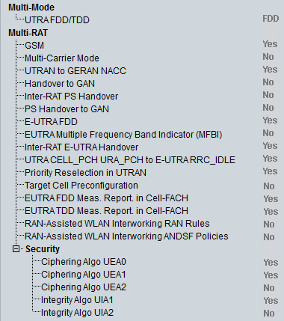

Multi-Mode and Multi-RAT UE Capabilities
The UE capability information in the multi-mode and multi-RAT sections indicates the duplex modes and radio access technologies that the UE supports.

Multi-mode / multi-RAT UE capabilities
- "UTRA FDD/TDD":
Indicates whether the UE supports UTRA FDD and/or TDD - "GSM":
Indicates whether the UE supports GSM - "Multi-Carrier Mode":
Indicates whether the UE supports multi-carrier mode - UTRAN to GERAN NACC:
Indicates whether the UE supports UTRAN to GERAN NACC - "Handover to GAN":
Indicates whether the UE supports CS handover to GAN - "Inter-RAT PS Handover":
Indicates whether the UE supports Inter-RAT PS handover - "PS Handover to GAN":
Indicates whether the UE supports PS handover to GAN - "E-UTRA FDD":
Indicates whether the UE supports E-UTRA FDD - "E-UTRA Multiple Frequency Band Indicator (MFBI)":
Indicates whether the UE supports the signaling requirements of multiple radio frequency bands in a cell. At the same time it indicates whether the UE understands the EARFCN signaling for all bands, that overlap with the bands supported by the UE. - "Inter-RAT E-UTRA Handover":
Indicates whether the UE supports Inter-RAT handover to LTE - "UTRA CELL_PCH URA_PCH to E-UTRA RRC_IDLE":
Indicates whether the UE supports inter-RAT reselection from UTRA CELL_PCH or URA_PCH to E-UTRA RRC_IDLE - "Priority Reselection in UTRAN":
Indicates whether the UE prioritizes reselection in UTRAN - "Target Cell Preconfiguration":
Indicates whether the UE supports simultaneous HS-DSCH reception from serving cell and decoding of an HS-SCCH sent from another cell in the active set - "E-UTRA FDD Meas. Report. in Cell-FACH":
Indicates whether the UE supports E-UTRA measurements and reporting for CELL_FACH for E-UTRA FDD - "E-UTRA TDD Meas. Report. in Cell-FACH":
Indicates whether the UE supports E-UTRA measurements and reporting for CELL_FACH for E-UTRA TDD - "RAN-Assisted WLAN Interworking RAN Rules":
Indicates whether the UE supports RAN-assisted WLAN interworking based on access network selection and traffic steering rules - "RAN-Assisted WLAN Interworking ANDSF Policies":
Indicates whether the UE supports RAN-assisted WLAN interworking based on ANDSF policies - "Security":
Indicates which ciphering and integrity algorithms the UE supports